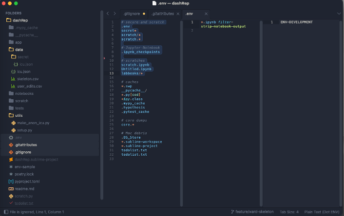

Practical tips

.gitignore is your friend
# Jupyter Notebook
.ipynb_checkpoints
# secret
secret*
.env
# scratches
scratch.ipynb
Untitled.ipynb
labbooks/*
tmp/*Do not ‘hard code’ usernames and passwords
Use a .env file (or secrets or similar) Exclude from git via .gitignore
# edit this file and replace with actual usernames and passwords
# then save WITH the dot prefix e.g. env --> .env
# DO NOT SAVE as env (without the dot prefix)
# else you will publish your secrets to github
# environment variables
EMAP_DB_USER=YOUR_USERNAME_HERE
EMAP_DB_PASSWORD=YOUR_PASSWORD_HERELoad your environment variables in Python
from dotenv import load_dotenv
load_dotenv('.env')A template JupyterNotebook for working with data at UCLH. The following features of this notebook, and associated files are documented here to minimise the risk of data leaks or other incidents.
- Usernames and passwords are stored in a .env file that is excluded from version control. The example
envfile at./config/envshould be edited and saved as./config/.env. A utility functionload_env_vars()is provided that will confirm this file exists and load the configuration into the working environment. - .gitattributes are set to strip JupyterNotebook cells when pushing to GitHub
import os
from dotenv import load_dotenv
from pathlib import Path
def load_env_vars(
ENV_FILE_ID = 'rainy.fever.song',
dotenv_path = './config/.env'
):
"""
Load environment variables or raise error if the file is not found
"""
dotenv_path = Path(dotenv_path)
load_dotenv(dotenv_path=dotenv_path)
if os.getenv('ENV_FILE_ID') != ENV_FILE_ID:
raise FileNotFoundError("""
IMPORTANT
An environment file holding the ENV_FILE_ID variable equal to 'rainy.fever.song'
should have been found at the ./config/.env path.
Is the script being run from the repository root (emap-helper/)?
Did you convert the example 'env' file to the '.env' file?
Please check the above and try again
""")
else:
return Truefrom sqlalchemy import create_engine
def make_emap_engine(db):
# Load environment variables
load_env_vars()
if db == 'uds':
# expects to run in HYLODE so these are part of this env
host = os.getenv('EMAP_DB_HOST')
name = os.getenv('EMAP_DB_NAME')
port = os.getenv('EMAP_DB_PORT')
user = os.getenv('EMAP_DB_USER')
passwd = os.getenv('EMAP_DB_PASSWORD')
elif db == 'ids':
host = os.getenv('IDS_DB_HOST')
name = os.getenv('IDS_DB_NAME')
port = os.getenv('IDS_DB_PORT')
user = os.getenv('IDS_DB_USER')
passwd = os.getenv('IDS_DB_PASSWORD')
else:
raise ValueError("db is not recognised; should be one of 'uds' or 'ids'")
# Construct the PostgreSQL connection
emapdb_engine = create_engine(f'postgresql://{user}:{passwd}@{host}:{port}/{name}')
return emapdb_engineDo not leak from Jupyter Notebooks
.gitattributes to strip outputs from cells in a notebook
*.ipynb filter=strip-notebook-outputFor R …
Use .Renviron as you would .env but it is automatically ‘read’ by R when it starts
# IMPORTANT
# DO NOT ADD THE .Renviron VERSION OF THIS FILE TO VERSION CONTROL
# RENAME from dotrenviron to .Renviron in place and then update the
# environment variables with actual values
# IDS access
IDS_PWD=foo
IDS_HOST=bar
IDS_USER=me
# UDS access
UDS_PWD=foo
UDS_HOST=bar
UDS_USER=me
# Internet access
http_proxy=http://my-hospital.nhs.uk:1234/
HTTP_PROXY=http://my-hospital.nhs.uk:1234/
https_proxy=http://my-hospital.nhs.uk:1234/
HTTPS_PROXY=http://my-hospital.nhs.uk:1234/
# https://rstudio.github.io/renv/articles/docker.html
RENV_PATHS_CACHE=/home/rstudio/renvThe End
A template JupyterNotebook for working with data at UCLH. The following features of this notebook, and associated files are documented here to minimise the risk of data leaks or other incidents.
- Usernames and passwords are stored in a .env file that is excluded from version control. The example
envfile at./config/envshould be edited and saved as./config/.env. A utility functionload_env_vars()is provided that will confirm this file exists and load the configuration into the working environment. - .gitattributes are set to strip JupyterNotebook cells when pushing to GitHub